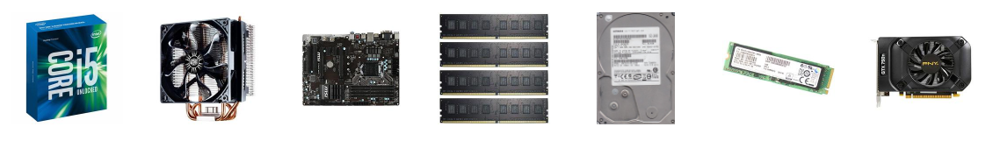
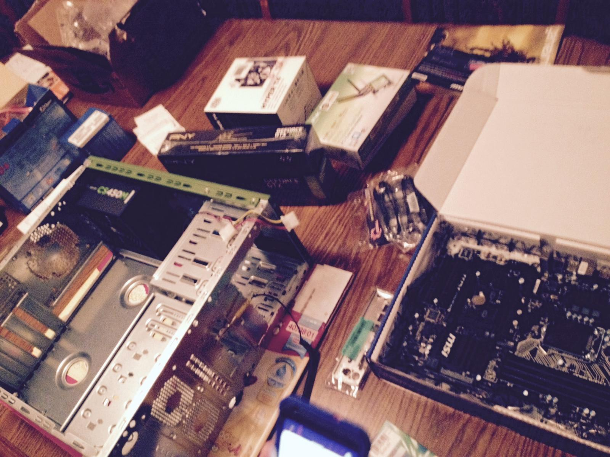
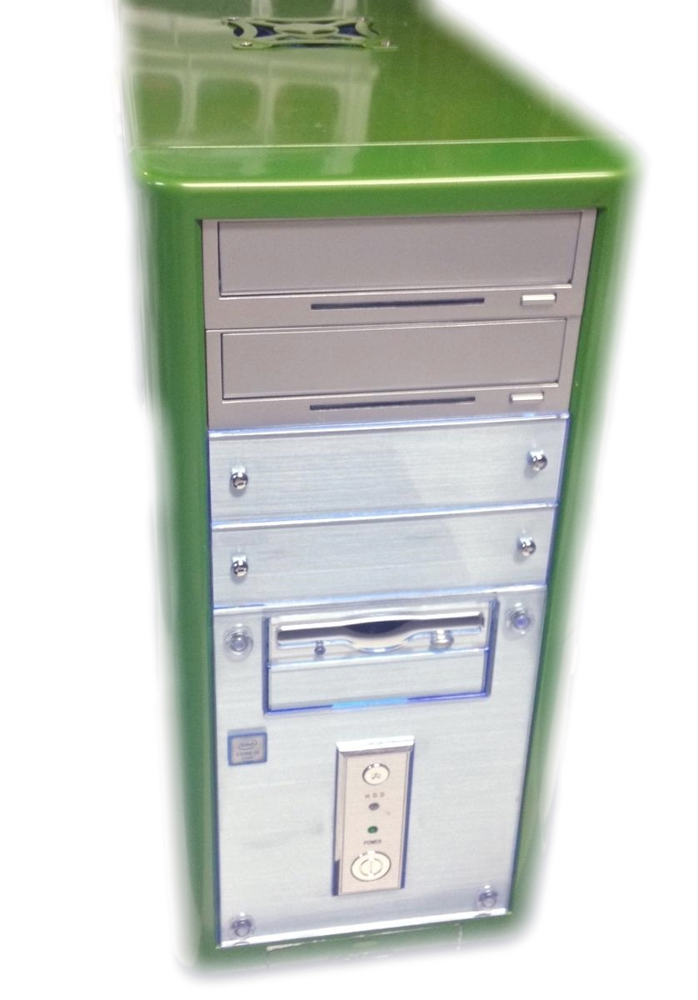
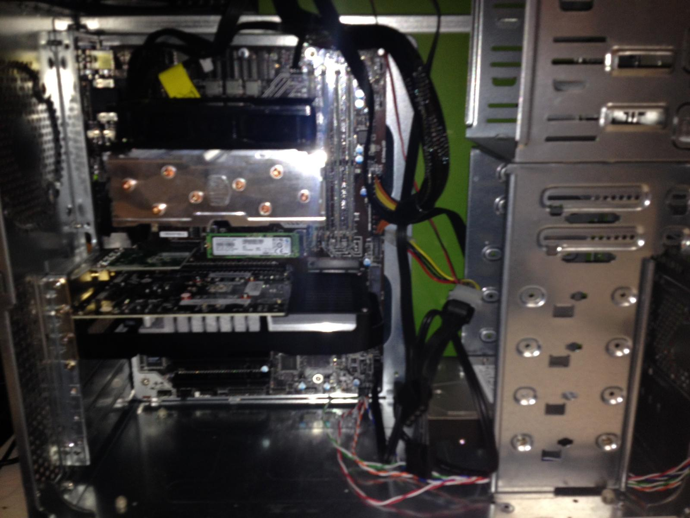

Parts

CPU
Intel - Core i5-6600K 3.5GHz Quad-Core Processor
CPU Cooler
Cooler Master - Hyper T4 70.0 CFM Rifle Bearing CPU Cooler
Motherboard
MSI - Z170A PC MATE ATX LGA1151 Motherboard
Memory
G.Skill - Value 16GB (4 x 4GB) DDR4-2400 Memory
Storage
Samsung - SM951 128GB M.2-2280 Solid State Drive
Hitachi - Deskstar 1TB 3.5" 7200RPM Internal Hard Drive
Video Card
PNY - GeForce GTX 750 1GB Enthusiast Edition Video Card
Case
Apevia - X-Gear Green ATX Mid Tower Case w/420W Power Supply
Power Supply
Corsair - CSM 450W 80+ Gold Certified Semi-Modular ATX Power Supply
Optical Drive
Asus - DRW-24B1ST/BLK/B/AS DVD/CD Writer
Operating System
Microsoft - Windows 8.1 Pro OEM 64-bit
Case Fan
Cooler Master - SickleFlow 69.7 CFM 120mm Fan
Description

I designed this computer to be my home computer for programming, game development, and gaming. The goal was to achieve a modestly powerful build on a budget. Here the budget is $1,000.
The target operating system is Windows 10 as well as earlier versions of Windows in a virtual machine for complete compatibility and a virtual installation of Debian for development work. Windows will run in VMWare for legacy games and Linux will run in Hyper-V for performance.
The best processor and graphics card combination on this budget, for our use case, is the Intel Core i5-6600K (Skylake) and the PNY GeForce GTX 750 (1 GB, dual fans). It makes sense to spend twice as much on the CPU because of our programming and processor intensive applications that we might run, including computer modeling.
We are using the 128 GB Samsung SM951 PCI-e M.2 flash drive as it is the highest performing affordable M.2 drive, and one of only a few that supports faster than SATA speeds. For main storage, we will be using a 7200 RPM 1 TB hard drive, the details of which are not significantly important.
I am also choosing to use an existing case, the Apevia X-Gear Green mid tower case that used to house my old computer, in order to save money and because the green color is stylish.
The power supply that I have picked out is gold certified for efficiency and very quiet. With 450W peak power, this provides enough power for our system which will mainly be our CPU, GPU, heatsink and fans, and hard drive drawing power.
Finally, the system does not have any internal optical drives, but I did use an external DVD writer to install the operating system initially and a high-speed Internet connection to download updates and software packages. The LCD monitor used with the computer is an ASUS VH236H 23" monitor, again another computer part that was used in a previous build.
In terms of raw processing power, the Intel Skylake Core-i5 has performance just shy of last year's Core i7-4790, another four-core processor that happens to support hyperthreading*. In some instances of gaming, the i5 might have better performance, but this is sort of an immaterial comparison.
* Hyperthreading is hardware support for more logical threads than physical cores.
Installation Steps

1) Install the CPU on the motherboard. The LGA 1151 socket is relatively straightforward, but it does require a significant amount of force to close the levers on the CPU. Interestingly, this chip does not have pins.
2) Install the power supply unit in the case. This is pretty straightforward and just involves fastening four screws tightly on the back of the case, as long as the PSU is above the load bearing metal bar that runs across it.
3) Place the heat sink backing plate behind the motherboard. Make sure the screws on the backing plate are adjusted to the right size and position for your motherboard.
4) Install the motherboard in the case. This involves lining up the input and output ports on the back of the case, where each of the metal pins has to be folded and lined up correctly. This may take up to two people. Then use six screws to fasten the motherboard to the case.
5) Install our 4x4 GB sticks of DRAM in the motherboard. IMPORTANT: it is important that you use regularly sized memory DIMMS, not anything with fancy heat fins, unless you intend to use only two or only three slots for memory. The reason for this is that our cooling solution needs to be oriented horizontally because of chipsets on the motherboard, and it will overlap the first stick of RAM. The clearance here is very tight.
6) Install the Hyper T4 CPU cooler. This requires a number of steps. Screw the top screws into the base screws on the motherboard, screw the brackets in above that and make sure they face upwards or the CPU cooler could fall off. Take the plastic label off of the bottom of the heatsink and place a pea sized amount of thermal grease on the center of the processor. Align the metal 'see-saw' in the center of the heatsink so that it fits in the grooves and place the heatsink over the center of the processor. Then slip the loops on one end of the see-saw under the mounting clip on one side, then the other, then use the lever to clamp the assembly tight. If done correctly, the heatsink and fan should be secure. Then attach the CPU fan cable to the motherboard in the proper location.
7) Install our M.2 SSD flash chip. The only note here is to adjust the motherboard screw to the 80 mm location and when inserting the chip in the motherboard at a 30 degree angle, make sure it is installed all the way so that the pins are not visible and the chip springs up if not held down. Then install the screw to keep it secure.
8) Install our PNY graphics card. Make sure to install it in the PCI-e 16x slot, which is the topmost full-length slot.
9) Install any other PCI cards. In this case that includes a wireless card and potentially a parallel ATA controller for using older DVD drives/hard drives.
10) Attach the power LED, hard drive LED, power switch, and reset switch wires from the case to the motherboard. Follow along with the instructions in the motherboard guide for this. There should be a diagram describing the pinout.
11) Install our physical hard drive. This involves attaching a SATA cable and SATA power cable. Use SATA ports 1, 2, 5, or 6. Ports 3 and 4 are disabled when using our PCI-e M.2 drive.
That should be all of our hardware steps!
12) Install Windows 8.1 Pro on our M.2 flash.
13) Upgrade to Windows 10 Pro. This is an overnight task that requires significant network bandwidth.
14) Format our hard drive. Make sure our hard disk is drive D: and the flash drive is C:.
15) Use the Windows 8.1 install disc to open the recovery console. Follow instructions to copy and link the Users folder to the other hard drive. Note that hard disk labels are different in the recovery console, and most likely reversed. Alternatively, you can move the individual folders for Documents, Pictures, Videos, ... to the D: drive and be aware that some programs may try to continue to install to folders under C:\Users. We only have 128 GB available so we do not want to be installing our major applications here.
16) Install drivers. Reboot. Install the rest of our software. Reboot.
17) Setup VMWare Player and Hyper-V and install our virtual machines.
18) Write software and be productive.
Summary
This is a modest, modern build for a multipurpose computer aimed at power users. There is a bias towards processing power over graphics power, so it is better tooled for performing work than playing games. In 99% of applications, however, the machine is complete overkill.
This is really the baseline for a build, and it would make the most sense to base decisions for building a computer on your own needs.